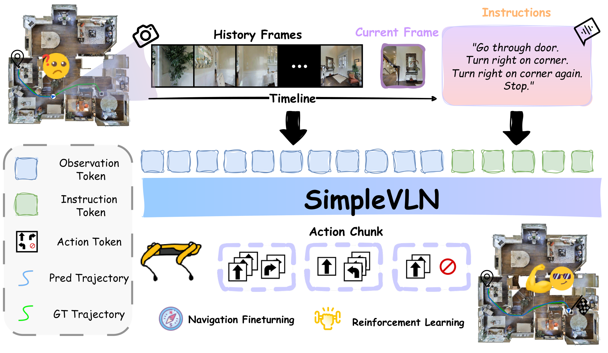
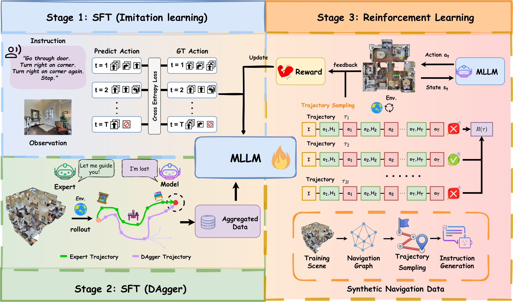
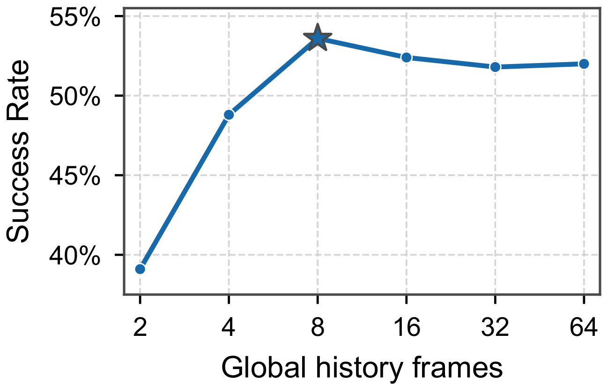
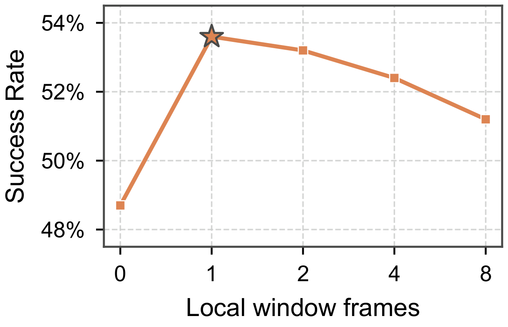
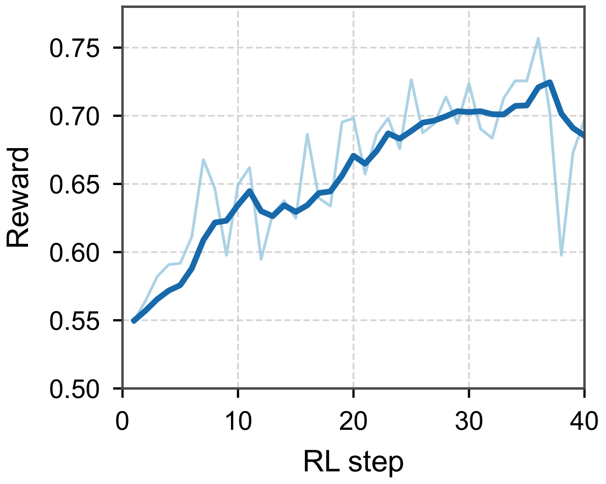
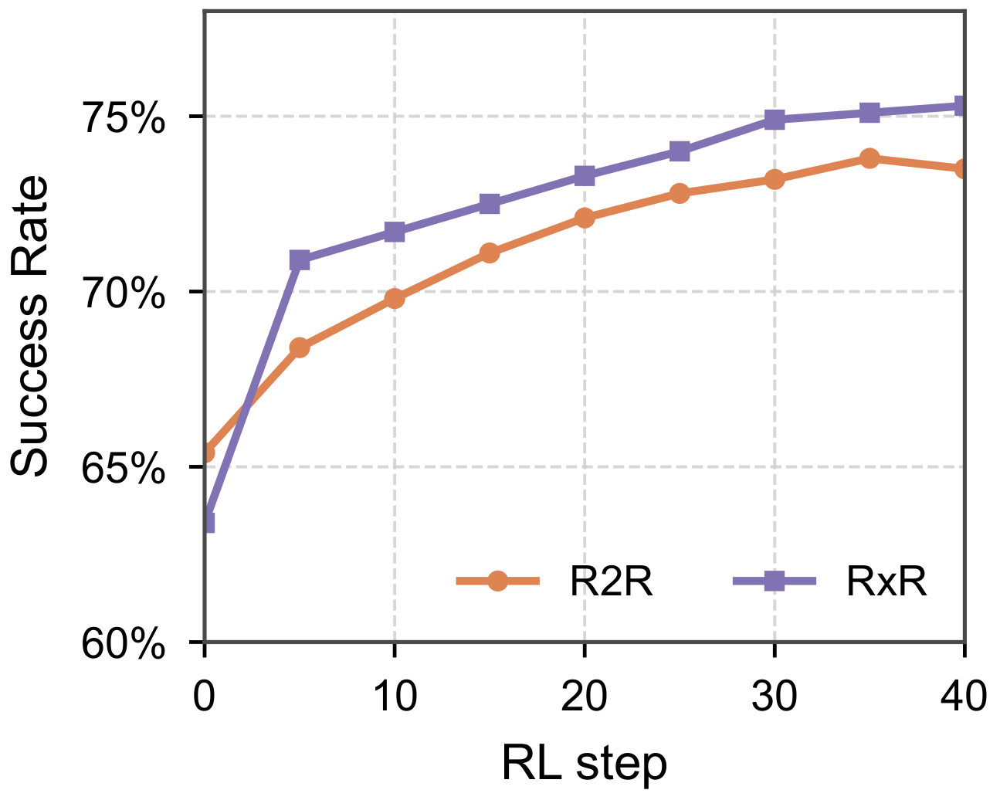
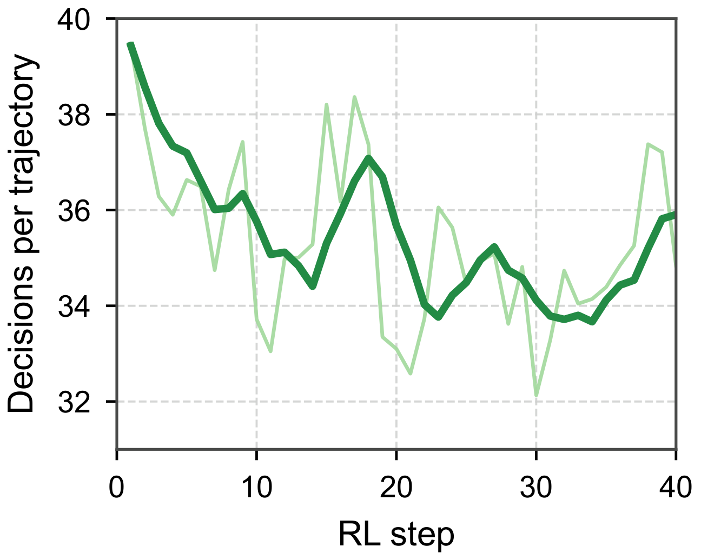
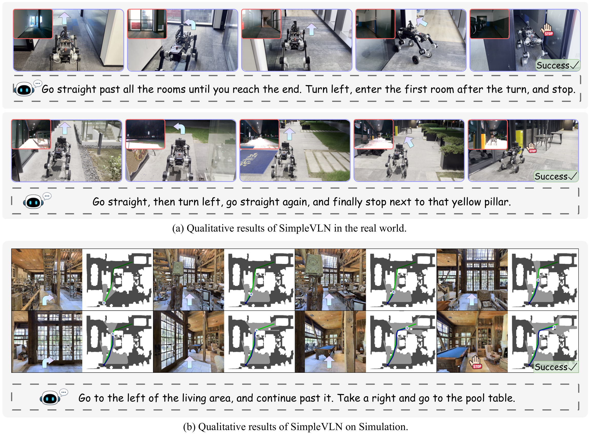

Figure 1: Motivation and performance comparison of SimpleVLN. (a) Motivation for using native MLLMs in VLN. (b) Comparison with existing methods on R2R-CE and RxR-CE.
Three levers. One native MLLM.
FormulationDataOptimization
01 — Demos
From language to motion.
Simulation pairs the onboard view with its map. Real-world runs show the robot navigating from live visual instructions.
Simulation
FoyerLiving roomGalleryKitchen
Real world
Office hallwayTurn left and enter the first roomYellow pillarStop next to the yellow pillarKFC entranceWalk to the KFC entrance and stopVending machineStop at the vending machineOutdoor pathFollow the stone path to the fitness areaRed carAvoid the pillar and stop at the red carFollow the personSpot the person in black and follow
02 — Approach
Keep the model. Change the recipe.
SimpleVLN directly adapts off-the-shelf MLLMs to sequential navigation. No graph planner, no specialized spatial encoder, and no dual-system controller.

Figure 2: Overview of SimpleVLN. At each decision, sampled history frames, current observation, and the instruction are fed to an MLLM, which directly predicts an action chunk for navigation.
01Formulation
Bounded context, unbounded horizon.
Single-turn decision inputs prevent context growth. Global–local history keeps route coverage and recent continuity within a fixed visual budget.
Single-turn decisions
8 global + 1 local frame
Action-chunk prediction
02Data
Learn from experts. Recover from mistakes.
Expert demonstrations are expanded with policy-induced DAgger experience and newly synthesized navigation tasks for interaction-based learning.
R2R + RxR + ScaleVLN
Policy-dependent DAgger
Scalable task synthesis
03Optimization
From action imitation to task completion.
A progressive post-training pipeline shifts the learning signal from demonstrated actions to binary, episode-level success feedback.
Imitation learning
Supervised adaptation
Outcome-driven RL

Figure 3: Training data pipeline of SimpleVLN. SimpleVLN first learns from expert demonstrations, then collects and aggregates corrective trajectories through DAgger. For RL, it synthesizes navigation episodes from sampled start–goal paths and generated instructions, then optimizes the policy through environment interaction and outcome feedback.
03 — Results
Simple scales. Results speak.
Across backbone families and model sizes, reinforcement learning consistently unlocks stronger navigation. The 9B model sets a new high-water mark on both VLN-CE benchmarks.
R2R-CEval-unseen · SR ↑
76.7%
RxR-CEval-unseen · SR ↑
80.1%
Fast by designA100 · model execution
293ms
Comparable to StreamVLN, while delivering +16.9 SR on R2R-CE.
Validated acrossQwen2.5-VL→Qwen3-VL→Qwen3.5
Table 1: Comparison with state-of-the-art methods on the R2R-CE and RxR-CE val-unseen splits.
† and * denote SimpleVLN before and after RL, respectively.
Method
Size
Observation
R2R-CE
RxR-CE
Pano.
Odo.
Depth
S.RGB
NE↓
OS↑
SR↑
SPL↑
NE↓
SR↑
SPL↑
nDTW↑
NaVid
7B
✓
5.47
49.1
37.4
35.9
8.41
23.8
21.2
—
Uni-NaVid
7B
✓
5.58
53.3
47.0
42.7
6.24
48.7
40.9
—
NaVILA
7B
✓
5.22
62.5
54.0
49.0
6.77
49.3
44.0
58.8
ActiveVLN
3B
✓
5.31
58.3
50.1
43.7
5.84
50.7
41.2
58.1
StreamVLN
7B
✓
4.98
64.2
56.9
51.9
6.22
52.9
46.0
61.9
NavFoM
7B
✓
5.01
64.9
56.2
51.2
5.51
57.4
49.4
60.2
JanusVLN
7B
✓
4.78
65.2
60.5
56.8
6.06
56.2
47.5
62.1
NaVIDA
3B
✓
4.32
69.5
61.4
54.7
5.23
57.4
49.6
67.0
CorrectNav
7B
✓
4.24
67.5
65.1
62.3
4.09
69.3
63.3
75.2
DualVLN
7B
✓
4.05
70.7
64.3
58.5
4.58
61.4
51.8
70.0
FutureNav
4B
✓
4.24
70.2
65.4
61.3
4.60
60.9
52.8
68.0
FutureNav
8B
✓
4.29
69.2
64.3
60.3
4.26
63.9
54.8
69.1
AgentVLN
3B
✓
✓
3.88
73.5
67.2
64.7
3.92
69.5
61.3
74.6
OmniNav
3B
✓
3.74
74.6
69.5
66.1
3.77
73.6
62.0
—
SEDualVLN
7B
✓
3.75
73.7
67.3
62.5
4.12
63.9
52.4
72.8
Qwen-RobotNav
4B
✓
4.22
73.6
66.9
60.5
4.15
71.3
61.5
68.6
Qwen-RobotNav
8B
✓
4.36
72.7
65.7
59.6
4.16
73.4
63.5
69.9
Qwen-RobotNav
4B
✓
3.80
77.2
69.5
63.6
3.80
75.2
65.0
71.9
Qwen-RobotNav
8B
✓
3.53
78.5
72.1
66.6
3.58
76.5
65.7
72.5
Efficient-VLN
8B
✓
3.29
78.2
73.2
65.0
3.18
75.6
60.0
—
SimpleVLN† (Qwen2.5-VL)
3B
✓
5.70
63.3
51.6
44.9
5.20
50.3
42.0
57.6
SimpleVLN† (Qwen2.5-VL)
7B
✓
4.87
68.4
59.1
52.0
5.31
58.9
49.2
62.9
SimpleVLN† (Qwen3-VL)
4B
✓
4.26
74.3
65.4
58.8
4.79
63.4
54.1
66.5
SimpleVLN* (Qwen3-VL)
4B
✓
3.39
79.4
73.8
66.7
3.29
75.1
65.3
71.5
SimpleVLN† (Qwen3-VL)
8B
✓
4.40
73.3
64.2
57.0
4.73
64.2
54.3
66.2
SimpleVLN* (Qwen3-VL)
8B
✓
2.93
79.2
74.4
69.5
3.11
76.4
66.4
77.4
SimpleVLN† (Qwen3.5)
4B
✓
3.76
77.5
67.1
59.2
4.32
65.6
55.3
67.8
SimpleVLN* (Qwen3.5)
4B
✓
2.79
80.1
76.3
72.3
2.61
79.2
69.7
80.3
SimpleVLN† (Qwen3.5)
9B
✓
3.59
76.9
69.2
61.2
4.48
64.0
54.2
67.0
SimpleVLN* (Qwen3.5)
9B
✓
2.63
84.1
76.7
72.6
2.51
80.1
69.9
79.8
Table 2: Comparison with state-of-the-art methods on inference latency and navigation performance.
Latency is measured on R2R-CE using the same NVIDIA A100 GPU, and measures model execution only for one action-chunk decision, excluding preprocessing, environment execution, and other non-model overhead. SimpleVLN uses Qwen3-VL-4B as its backbone.
Method
Size
Latency (ms)↓
R2R-CE
RxR-CE
NE↓
OS↑
SR↑
SPL↑
NE↓
SR↑
SPL↑
nDTW↑
StreamVLN
7B
300
4.98
64.2
56.9
51.9
6.22
52.9
46.0
61.9
JanusVLN
7B
906
4.78
65.2
60.5
56.8
6.06
56.2
47.5
62.1
DualVLN
7B
683
4.05
70.7
64.3
58.5
4.58
61.4
51.8
70.0
FutureNav
4B
1141
4.24
70.2
65.4
61.3
4.60
60.9
52.8
68.0
SimpleVLN
4B
293
3.39
79.4
73.8
66.7
3.29
75.1
65.3
71.5
04 — Ablation
Each lever earns its place.
StreamVLN shows a data recipe on its project page; FutureNav and DualVLN keep ablations in the paper. We surface them here because they are the evidence for formulation, data, and optimization.
Table 3: Navigation interface and memory design.
Ablations of action chunking, single-turn navigation, and observation sampling using Qwen3-VL 4B fine-tuned on R2R. The default design of SimpleVLN is shaded.
Action format
Action format
NE↓
OS↑
SR↑
Primitive action
5.2
54.5
45.6
Action chunk
5.5
61.2
53.6
Dialogue format
Dialogue format
NE↓
OS↑
SR↑
Multi-turn
5.9
55.2
35.7
Single-turn
5.5
61.2
53.6
Observation sampling
Sampling scheme
NE↓
OS↑
SR↑
Chunk
6.1
55.2
46.3
Primitive (all)
5.8
57.5
51.9
Primitive (8)
5.5
61.2
53.6


Figure 4: Memory budget. Effect of global and local memory sizes on R2R-CE val-unseen SR. We vary M with N = 1 (left) and N with M = 8 (right); stars indicate the default configuration.
Table 4: Demonstration and DAgger data ablation on the R2R-CE and RxR-CE val-unseen splits.
R2R
RxR
ScaleVLN
DAgger
R2R SR↑
R2R SPL↑
RxR SR↑
RxR SPL↑
✓
53.6
48.1
50.3
42.0
✓
✓
56.7
51.3
54.5
46.7
✓
✓
✓
57.9
50.9
55.3
48.1
✓
✓
✓
✓
65.4
58.8
63.4
54.1
Table 5: Synthesized RL data ablation on the R2R-CE and RxR-CE val-unseen splits.
Dataset columns identify the training-scene sources used to synthesize RL episodes.
R2R
RxR
ScaleVLN
R2R SR↑
R2R SPL↑
RxR SR↑
RxR SPL↑
Pre-RL baseline
65.4
58.8
63.4
54.1
✓
68.5
63.2
65.8
55.3
✓
67.5
59.3
68.5
59.5
✓
66.6
61.3
66.3
56.2
✓
✓
69.4
63.8
69.7
60.8
✓
✓
✓
70.1
65.6
71.0
62.1



Figure 5: RL training dynamics. Overall, rollout reward and evaluation success rate increase, while the average number of action-chunk decisions per trajectory decreases.
Table 6: Reward design and RL optimization on the R2R-CE and RxR-CE val-unseen splits with Qwen3-VL 4B.
The SPL reward is zero for failed episodes and equals the ratio of the ground-truth path length to the executed path length for successful episodes; the success reward is binary.
RL configuration
R2R SR↑
R2R SPL↑
RxR SR↑
RxR SPL↑
Pre-RL baseline
65.4
58.8
63.4
54.1
GRPO + SPL(τ)
68.9
63.1
67.7
58.3
GRPO + 𝟙(success)
70.1
65.6
71.0
62.1
DAPO + 𝟙(success)
71.5
65.3
73.7
64.0
05 — In the wild
From simulation to the real world.
SimpleVLN follows multi-step instructions on a Daystar quadruped and in unseen Habitat scenes, using only egocentric visual observations.

Figure 6: SimpleVLN in real-world and simulated environments. SimpleVLN follows diverse instructions and reaches the specified goals; arrows indicate navigation directions. (a) Qualitative results of SimpleVLN in the real world. (b) Qualitative results of SimpleVLN on Simulation.
06 — Abstract
Vision-and-Language Navigation requires embodied agents to ground language in visual observations and make long-horizon decisions. Existing methods often address these demands through task-specific architectures.
We present SimpleVLN, an architecture-preserving framework developed through studies of navigation formulation, data construction, and optimization. Comprehensive experiments show that the navigation capabilities of native MLLMs can be effectively unlocked without task-specific architectural designs.
07 — Citation
Built simple. Made to advance.
@article{hong2027simplevln,
title = {SimpleVLN: Towards Simple and Frontier
Vision-Language Navigation},
author = {Hong, Lingyi and Cai, Weiren and Chen, Jiayu
and Zhou, Xinyu and He, Bailin and Guo, Yunfei
and Sun, Qiao and Liu, Xiang and Ma, Boyu
and Yang, Jianfei and Zhang, Wenqiang},
journal = {Under review at ICLR},
year = {2027}
}